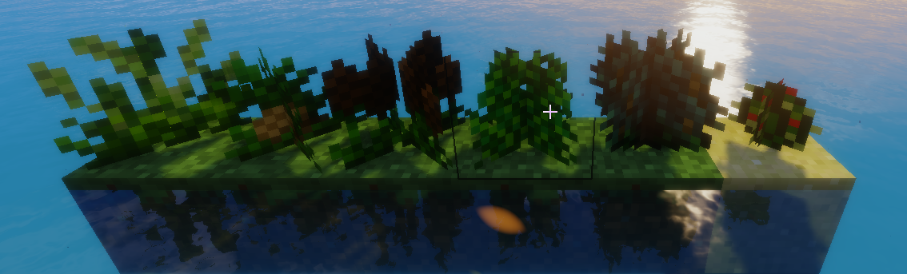
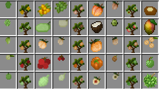
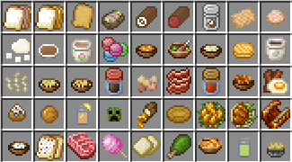
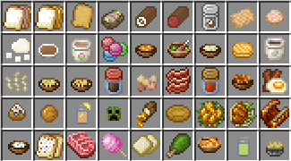

카테고리 제작 목적 : 마인크래프트가 유투브 컨텐츠 제작 및 새로운 세계관과 관계 모델링을 보여주는 툴로 활용되는 시작점인 지금 창작자 여성들이 다양한 마인크래프트 모드를 쉽게 접하고 활용할 수 있도록 한글로 정보를 제공하여 전체적인 접근도 향상에 기여하는데 그 목적이 있다. 개개의 모드를 상세히 설명하는 하위 문서를 먼저 만든 후 마인크래프트 전체 모드문서를 생성할 예정.
1. 개요
마인크래프트 모더 Pam이 제작한 농업 제작 모드. 80여종의 작물과 50여가지 과수나무 아이템, 낚시로 낚을 수 있는 어류 29종, 이외 1400가지 이상의 음식 및 기타 아이템이 포함된 모드이다. 팜의 농업제작 모드 1편은 1.12.2버전을 지원하며, 팜의 농업제작 모드 2편은 1.15.1버전을 지원한다.
2. 내용
2.1 작물과 씨앗
게임 내 모든 작물과 씨앗들. 작물은 덤불 정원을 부수면 얻을 수 있고, 씨앗은 상점에서 에메랄드를 주고 구입할 수 있다. 한글 명칭과 얻는 방법을 알고 싶다면 덤불 정원 항목을 참조.
2.1.1 덤불 정원

야생 작물은 6종의 덤불 정원을 부숴 얻을 수 있으며 씨앗은 상점을 통해서만 얻을 수 있다. 왼쪽부터 냉대 정원, 열대 정원, 고산 정원, 온대 정원, 한대 정원, 건조 정원. 쉬프트를 누른 채 왼쪽 클릭을 하면 정원 자체를 캘 수 있다.
| 냉대 정원 (평야지대) | [밀, 당근, 감자, 보리, 아마란스, 아티초크, 파스닙, 아마, 양파] [딸기, 상추, 엘더베리, 땅콩, 고추, 겨울호박, 오이, 피망] [옥수수] |
| 온대 정원 (숲지대) | [고구마, 토마토, 대황, 마늘, 찻잎, 순무, 콩, 블랙베리, 주키니호박] [파, 황마, 부추, 흰색 버섯, 향잎, 무] |
| 고산 정원 (고지대) | [향잎, 멀베리, 쌀, 청포도, 수수, 마름, 목화, 오크라, 케일] [방울양배추, 아스파라거스, 멕시코감자, 블루베리, 해초, 꽈리토마토, 크랜베리] |
 | |
| 한대 정원 (설원지대) | [목화, 콜리플라워, 비트, 라즈베리, 시금치, 셀러리, 퀴노아, 완두콩, 배추] [브로콜리, 허클베리, 스웨덴순무, 귀리, 콜라비, 호밀] |
| 건조 정원 (사막지대) | [선인장, 용설란, 렌틸콩, 백년초, 카사바, 병아리콩, 사이잘] |
| 열대 정원 (열대우림) | [참깨, 파인애플, 토란, 생강, 키위, 죽순, 대두, 강황잎, 포도] [가지, 커피콩, 칸탈루프, 애로루트, 양마] |
2.2 과수나무
| [묘목/익은 과실/덜 여문 과실]*3 | |
[대추야자, 파파야, 체리] [무화과, 샤워솝, 용과] [람부탄, 바라밀, 패션후르츠] [사과, 레몬, 배] | |
[올리브, 거미줄, 자몽, 석류] [캐슈, 바닐라, 오렴자] [바나나, 자두, 아보카도] [라임, 후추, 아몬드] | |
|  | [구즈베리, 복숭아, 밤] [파파야, 코코넛, 망고] [살구, 오렌지, 호두] [리치, 감, 구아바] [빵과, 육두구, 두리안] |
| [타마린드, 계피, 단풍, 페이버박] |
각종 과일 및, 견과류, 심지어 거미줄까지 채집할 수 있다. 과수나무의 열매는 땅에 심지 못하고 상점에서 묘목을 구매해야 심을 수 있으며, 한번 심은 과수나무의 부산물은 시간이 지날 때마다 꾸준히 성장해 수확할 수 있다. 계피, 단풍, 페이퍼박 나무의 경우 완전히 성장한 줄기를 오른쪽 클릭하면 아이템을 수확할 수 있다.
2.3 어패류
[멸치, 배스, 잉어, 메기, 홍송어, 조개, 게, 가재] [장어, 개구리, 그루퍼농어, 청어, 해파리, 미꾸라지, 문어, 퍼치농어, 가리비] [새우, 달팽이, 도미, 틸라피아, 송어, 참치, 거북, 명태, 그린 하트 피쉬 [정어리, 홍합, 토피쉬, 굴] |
낚시 뿐 아니라 물 함정으로도 잡을 수 있다. 물 함정에는 물고기 미끼(분홍색)를 넣어야 한다.
2.4 조리도구
| [주스기, 도마, 냄비, 스튜용 냄비, 소스 냄비, 빵틀, 절구와 절굿공이, 믹싱 볼] |
위의 조리도구와 재료를 조합하여 다양한 요리를 만들 수 있다.
2.5 요리의 재료 제작
| 상점 | 에메랄드를 내고 씨앗, 묘목, 스폰알, 뼛가루, 여왕벌, 끈, 이름표를 살 수 있다. | |
| 배송통 | 에메랄드를 내고 작물, 어패류, 고기, 달걀, 몬스터 부산물, 벌집, 유충을 살 수 있다. | |
| 우물 | 물이 무한정 나오는 우물 | |
| 땅 함정 | 과일/곡물/채소 미끼를 넣어 가축 부산물과 고기를 얻는 덫. 지면과 수평으로 두되 동서남북으로 2칸 이상 흙이 있어야 한다. | |
| 물 함정 | 물고기 미끼를 넣어 어패류를 얻는 어망. 수면과 수평으로 두되 동서남북으로 1칸 이상 물이 있어야 한다. | |
| 물 필터 | 면직물1 을 넣으면 물과 소금을 얻을 수 있는 필터 | |
| 압착기 | 과일/베리를 넣으면 쥬스와 과일 미끼를 얻을 수 있다. 아몬드를 넣으면 프레시 밀크와 곡물 미끼를 얻을 수 있다. 벌집을 넣으면 꿀과 왁스를 얻을 수 있다. 올리브/아보카도/해바라기씨/호두/찻잎을 넣으면 식용유와 미끼를 얻을 수 있다. 사탕수수나 비트를 넣으면 설탕을 얻을 수 있다. 나무를 넣으면 종이를 얻을 수 있다. 물을 넣으면 소다수(거품물)을 얻을 수 있다. 대두를 넣으면 순두부와 두유를 얻을 수 있다. 순두부를 넣으면 두부와 두유를 얻을 수 있다. | |
| 분쇄기 | 고기/어패류/곡물을 넣어 간고기/간생선/곡물가루를 얻을 수 있다. | |
| 양봉장 | 여왕벌2 을 이용해 양봉을 하는 양봉장. 유충, 벌집, 여왕벌을 얻을 수 있다. |
2.6 요리

 

2.7 기타 아이템
강화 가죽과 그걸로 만든 옷들
왁스로 만든 양초들